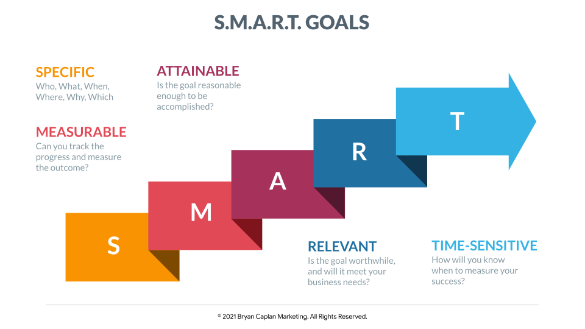

<!-- Extending the predefined project layout -->
{% extends "layouts/base.html" %}

<!- This variable sets name of browser tab  -->
{% set project = "Goals" %}

<!- This is a replacement block for Body in base.html -->
{% block body %}
    <!- Try building a new body here, bootstrap is a wise choice ->
    
    <div class="px-5 py-5 mx-auto">
        <h1 class="text-primary"><strong>Fitness Goals</strong></h1>
        <p> </p>
        <html>
        <body>

            <label for="Name">What is your Name?</label> </label> <input type="text" id="name">
            <br>
            <br>
            <h for="weight">What is your current weight(lb)? </h><input type="text" id="weight">
            <br> 
            <br>
            <label for="height">What is your current Height(in)? </label> <input type="text" id="height"> 
            <br>
            <br>
            <label for="change">Do you want to gain or lose weight? </label> <input type="text" id="change"> 
        <button type="submit" onclick="myfunc()" id="check">Submit</button>
            
            <script type="text/javascript">
                
            function myfunc() {
        
                var change = document.getElementById('change').value;
                
                if (change == "gain") {
                    document.write("Tips for Gaining Weight: ".fontsize(50) + "<br>")
                    document.write("-".fontsize(6) + "Eat More Frequently".fontsize(6) + "<br>")
                    document.write("-".fontsize(6) + "Choose nutrient-rich foods".fontsize(6) + "<br>")
                    document.write("-".fontsize(6) + "Try smoothies and shakes".fontsize(6) + "<br>")
                    document.write("-".fontsize(6) + "Watch when you drink".fontsize(6) + "<br>")
                    document.write("-".fontsize(6) + "Make every bite count".fontsize(6) + "<br>")
                    document.write("-".fontsize(6) + "Exercise".fontsize(6) + "<br>")
                } else if (change == "lose") {
                    document.write("Tips for Losing Weight: ".fontsize(50) + "<br>")
                    document.write("-".fontsize(6) + "Eat Regular Meals".fontsize(6) + "<br>")
                    document.write("-".fontsize(6) + "Get More Active".fontsize(6) + "<br>")
                    document.write("-".fontsize(6) + "Drink plenty of water".fontsize(6) + "<br>")
                    document.write("-".fontsize(6) + "Eat high fibre foods".fontsize(6) + "<br>")
                    document.write("-".fontsize(6) + "Do not stock junk food".fontsize(6) + "<br>")
                    document.write("-".fontsize(6) + "Plan your meals".fontsize(6) + "<br>")

                } else {
                    document.write("There is an Error Please re-enter your answers")
                }
            }
        </script>
        </body>
        </html>

{% endblock %}

<!- This is turning off birds background from base.html -->
{% block background %}
{% endblock %}

    